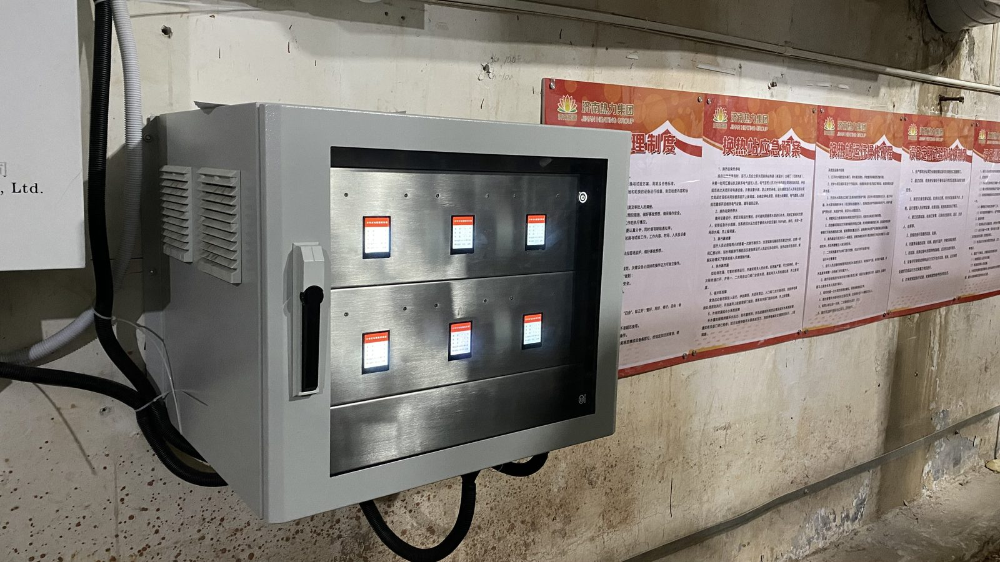
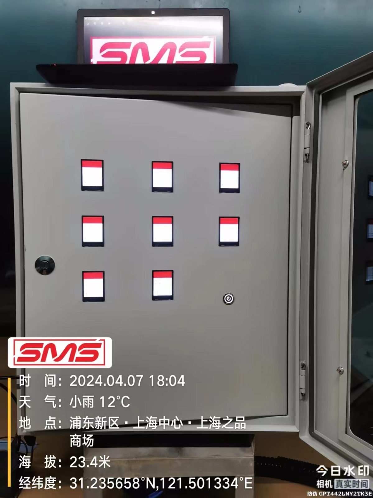
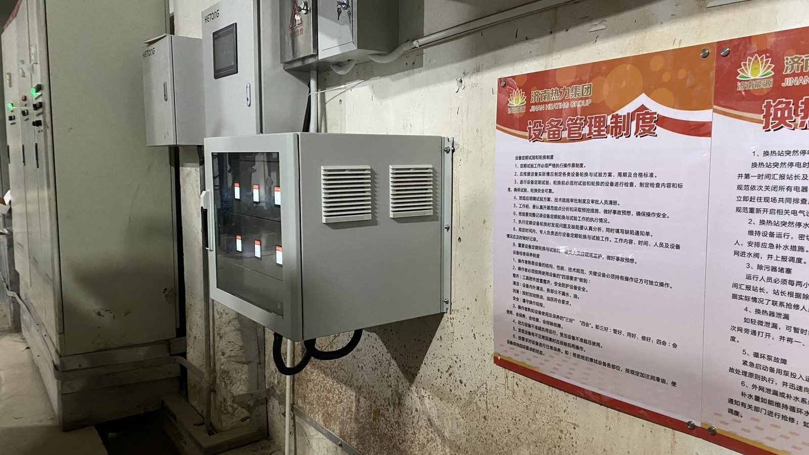

OVERVIEW
产品概述
看得见的状态，管得住的节能
中型机柜采用 600×322×870mm 落地式机身，集成触控显示屏，实时呈现电流、温度、运行时长等关键运行参数，设备状态一目了然。
依托变频电磁物理除垢原理，在不投加任何化学药剂的条件下抑制水垢生成，无需停机即可部署，保障生产连续稳定。
支持 DTU 远程数据上传 与多机并联集中管控，运维人员可远程掌握分布在各车间的设备状态，大幅提升节能管理的精细化水平。

PRINCIPLE
工作原理 · 变频电磁物理除垢

让水垢"变软"随水走
设备通过缠绕在管道外的专用线圈产生变频交变电磁场，使水分子极性增强、分子间氢键被打散，水的溶解能力提高。
在此环境下，水中的 Ca²⁺、Mg²⁺ 不易聚集成坚硬的方解石（水垢），而倾向于生成疏松的文石晶体，随循环水被带走或在排污时排出，从而实现阻垢、除垢。
整个过程纯物理作用、不接触水体、不加药，不改变水质化学性质，环境友好、运行安全。
ADVANTAGES
核心优势
🖥️
触控屏可视
实时显示电流、温度、时长，运行状态直观可见，便于巡检与记录。
🌿
零化学药剂
不投加阻垢剂、缓蚀剂，杜绝二次污染，满足环保与减排要求。
⚡
免停机安装
外壁缠绕线圈，不破管、不停机，生产零中断即可完成部署。
📡
远程集中管控
支持 DTU 上传，多机并联集中管理，远程掌握各点设备状态。
💡
超低功耗
单台运行功耗低于 120W，以极小能耗换取显著的节能降耗收益。
🔧
免维护长寿命
无易损件、无耗材，设计寿命 10 年以上，运维成本近乎为零。
SPECIFICATIONS
技术参数
| 参数项 | 中型机柜典型值 |
|---|---|
| 外形尺寸 | 600 × 322 × 870 mm（宽×深×高） |
| 安装方式 | 落地式 |
| 显示 | 触控屏（运行参数实时显示） |
| 适用管径 | DN80 – DN400（按现场选型） |
| 电源 | AC 220V ±10% / 50Hz |
| 运行功耗 | < 120 W |
| 工作温度 | -20℃ – 60℃ |
| 防护等级 | IP54 |
| 远程监控 | 标配 DTU 远程上传 |
| 设计寿命 | ≥ 10 年 |
上述参数为典型值，实际配置以现场工况诊断与正式选型方案为准。
SCENARIOS
适用场景
中大型冷却塔
中央空调主机
工业循环水系统
化工热交换
冶金冷却水
区域供热管网
食品饮料产线
ON-SITE
现场应用实拍

机柜内部结构
模块化设计，触控屏集成

车间部署
贴邻管道，远程集中管控
FAQ
常见问题
中型与小型的主要区别是什么？
中型机身更大、处理能力与适用管径更高，并标配触控屏与 DTU 远程监控，适合中大型系统及需要集中运维管理的多机组场景；小型则更紧凑、即装即用。
远程监控需要额外布线吗？
DTU 模块通过蜂窝网络上传数据，通常无需额外网络布线。具体取决于现场网络环境，我们会在方案中明确。
多台设备如何集中管理？
多台机柜可并联部署，数据统一接入监控平台，在电脑或手机端集中查看各设备状态、告警与运行报表，便于统一节能管理。
安装会耽误生产吗？
不会。外壁缠绕线圈，无需切割或停水停机，短时间内即可完成安装并通电运行，生产全程零中断。
需要定期加药或换耗材吗？
不需要。纯物理电磁作用，全程零化学药剂、零耗材，也无易损件，运维成本极低。